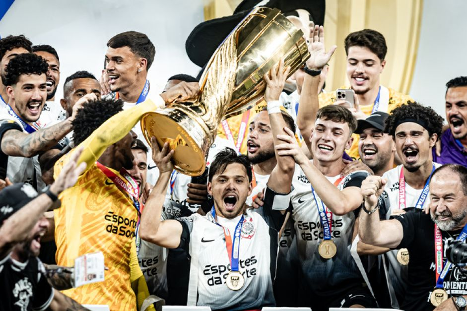
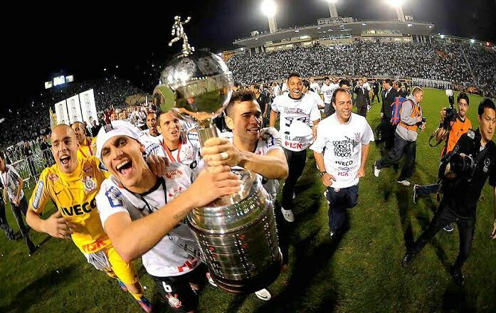
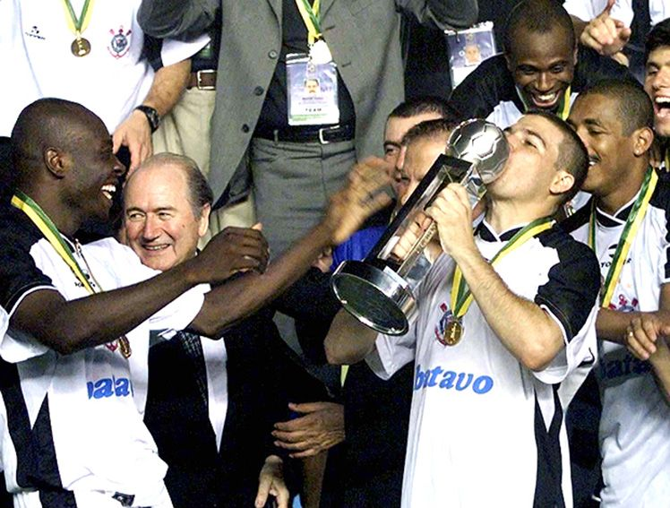
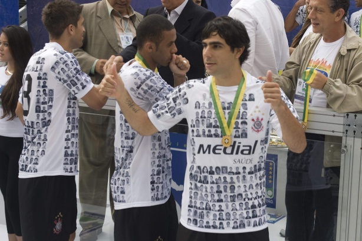
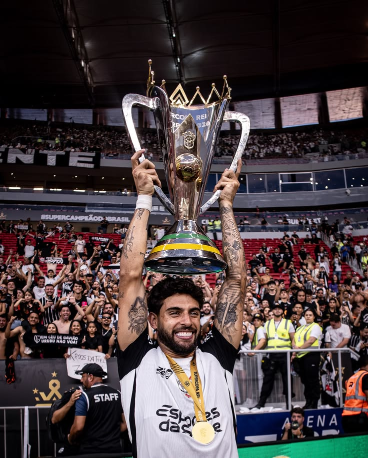

TÍTULOS DO CORINTHIANS
UMA HISTÓRIA CONSTRUÍDA COM CONQUISTAS, SUPERAÇÃO E MOMENTOS INESQUECÍVEIS.

CAMPEONATOS PAULISTAS
O Corinthians é um dos clubes mais vitoriosos da história do Campeonato Paulista.
CAMPEONATOS BRASILEIROS
O Corinthians conquistou sete vezes o Campeonato Brasileiro.
COPAS DO BRASIL
O Corinthians conquistou quatro vezes a Copa do Brasil.

LIBERTADORES
Em 2012, o Corinthians conquistou sua primeira Copa Libertadores de forma invicta.

MUNDIAIS DE CLUBES
O Corinthians conquistou o Mundial de Clubes da FIFA em 2000 e 2012.

CAMPEONATO BRASILEIRO SÉRIE B
Em 2008, o Corinthians conquistou o Campeonato Brasileiro da Série B e garantiu seu retorno à elite do futebol brasileiro.
2008
SUPERCOPA DO BRASIL
O Corinthians conquistou a Supercopa do Brasil em duas oportunidades, em 1991 e 2026.
1991 • 2026OUTRAS CONQUISTAS HISTÓRICAS
PEQUENA TAÇA DO MUNDO
VENEZUELA
TORNEIO INTERNACIONAL CHARLES MILLER
BRASIL
COPA DO ATLÂNTICO
TORNEIO INTERNACIONAL
COPA CIDADE DE TURIM
ITÁLIA
TORNEIO COSTA DO SOL
ESPANHA
TORNEIO DO POVO
TORNEIO INTERESTADUAL
TORNEIO FEIRA DE HIDALGO
MÉXICO
COPA DAS NAÇÕES
ESTADOS UNIDOS
COPA DOS CAMPEÕES
TORNEIO INTERNACIONAL
TROFÉU RAMÓN DE CARRANZA
ESPANHA
TORNEIO RIO-SÃO PAULO
1950 • 1953 • 1954 • 1966 • 2002
TAÇA DOS CAMPEÕES RIO-SÃO PAULO
1929 • 1941
TAÇA ESTADO DE SÃO PAULO
1962